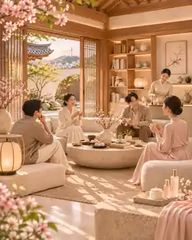

01 / K-BEAUTY
Beauty Atelier
나만의 아름다움을 발견하는 곳
제품을 소비하는 데서 나아가 피부와 취향을 이해하는, 현대적인 K-뷰티 탐색 경험.
Skincare · Science · Personal Choice
한국의 정(情)을 품고, 나다운 삶을 당당하게.
낮에는 차를 마시고, 밤에는 DJ의 음악에 맞춰 춤을 추는 서울의 열린 휴식 공간을 그립니다.
낮의 티 살롱에서 밤의 DJ 파티까지. 뉴욕의 겨울밤을 담는 향수 New York Holiday를 기획하고 있습니다.
Enter the House
Jeong (情) · The art of togetherness.서엔은 한국의 정(情)을 피부를 돌보는 습관과 향에 담는 K-뷰티·웰니스 브랜드입니다. 그 마음을 서울에서 경험할 수 있도록 차 한 잔을 내어주고 각자의 속도로 머무는 서엔 하우스를 구상합니다.
우리에게 특별한 삶은 성공 뒤에 얻는 보상이 아닙니다. 자신만의 취향을 선택하고, 몸과 마음을 돌보고, 관계를 가꾸는 오늘의 태도에서 시작됩니다.
We call this Everyday Holiday — the confidence to shape your own life, the warmth to make others feel welcome, and the care to choose what lasts.
SEOEN HOUSE SEOUL은 기획·개발 단계의 K-뷰티·웰니스·문화 하우스 콘셉트입니다. 실제 운영 중인 시설이 아닙니다.
한국적인 환대와 뷰티 전문성, 쉼과 문화적 호기심이 만나는 곳. SEOEN HOUSE가 제안하는 세 가지 경험의 장면입니다.
제품을 소비하는 데서 나아가 피부와 취향을 이해하는, 현대적인 K-뷰티 탐색 경험.
Skincare · Science · Personal Choice
향, 피부 관리와 휴식의 감각을 연결해 일상에서 나를 다정하게 돌보는 시간.
Rest · Scent · Care
차와 공예, 현대미술과 대화를 통해 한국의 정(情)을 오늘의 감각으로 경험하는 살롱.
Tea · Art · Connection
공간과 프로그램은 브랜드 경험을 설명하기 위한 콘셉트입니다. 현재 운영 중인 예약·시술·판매 서비스를 뜻하지 않습니다.
An intimate, unforgettable presence.
서울 하우스의 저녁에는 DJ가 음악을 고르고, 사람들은 춤을 추거나 곁에 앉아 이야기를 나눕니다. 각자 편한 방식으로 어울리는 DJ 파티를 기획하고 있습니다.
하우스에서 느낀 돌봄을 집에서도 이어갈 수 있도록 서엔의 세럼과 크림을 구상합니다. 시그니처 향은 정제된 플로럴과 따뜻한 우디 머스크가 피부에 잔잔히 남는 방향으로 개발하고 있습니다.
New York Holiday는 뉴욕의 겨울과 홀리데이 밤에서 영감을 받은 향수 기획입니다. 차가운 거리에서 음악이 흐르는 실내로 들어서는 순간을 향으로 표현하고자 합니다.
서엔이 말하는 정(情)은 상대의 취향과 경계를 존중하는 세심한 환대입니다. 지속가능성은 더 많이 소유하는 것보다 오래 사용할 이유를 찾고, 일회성 경험보다 오래 남는 기억을 선택하는 것에서 시작됩니다.
따뜻하지만 독립적으로. 정제되었지만 자유롭게. 당당하지만 배려 깊게.
서엔 서울 아카이브에서 하우스의 층별 공간과 제품·향의 개발 구상을 살펴볼 수 있습니다. 한국의 뷰티와 문화, 일상의 장면은 서엔 저널에 기록합니다.
Read SEOEN Journal